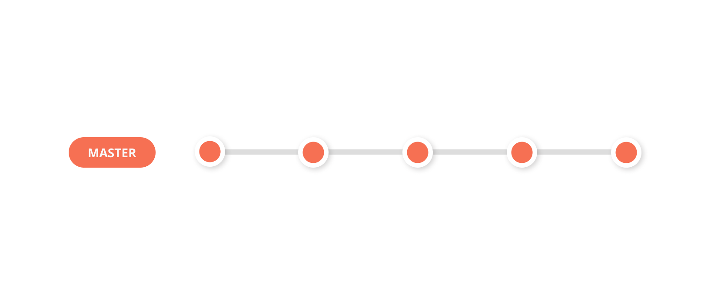
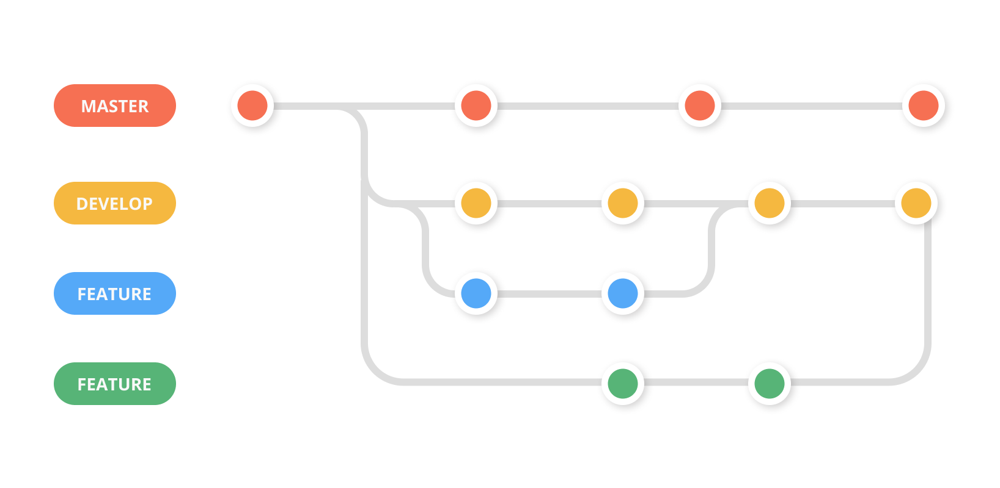
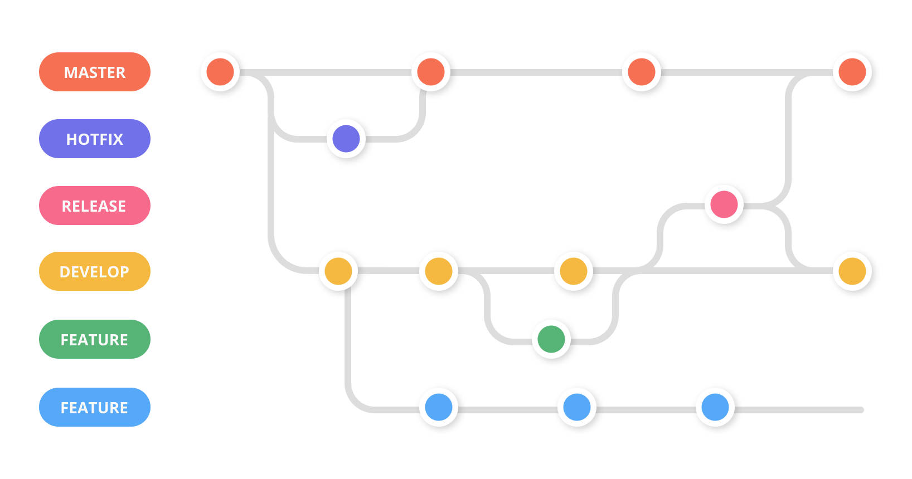

Comprehension
1. Introduction devops
Devops = industrialisation de l"IT
Née en 2009 par patrick debois , c'est un mouvement est une extension de la méthodologie Agiles ( Scrum, Kaban )
2. Pipeline Devops
Outils : jira , git Plan : - Cadrage fonctionnelle technique - Gestion du backlog - Préparation des us du sprint
Code
3. Build
Livrable à partir du code
4. Tests
- Test fonctionnelle TNR UAT
- Test de performance : E2E , Intégration Tests , unit test ( cost ---> $$$) ( inté ---> isolation )
Test unitaire : plus bas niveaux ,
Test d'intégration : test avec livrable complet , chargé tout et tout tester ,
End 2 end : scenario vérif tout fonctionne
5. Release
Gestion des versions applicative : - Snapshots : version de travail - Releases : ensemble de features et fixes ( on peut pas le rebuild )
Sémantique : ex 1.2.3
- Majeur : Evolution rétrocompatibles
- Mineur: Mineur Rétrocompatible
- Correctif: Patch anomalie
6. Deploy
Livraison en production : - FDR , feuille de route ( etape de livraison , acteurs , durée , planning ) - Process rollback
7. Operate ( exploitation )
Phase de gestion de l'application en production, équipe dédié ( helpdesk ) astreinte h24
8. Monitor ( prometeus , elastick, logstash , Kibana alias elk )
Phase de surveillance de l'application et des process ; monitor de prod ( faille , log , secu , perf ) , recuille avis cliens , stats projet ( time to market , bottleneck )
------------------------------------------------------------------------------------------------------------------------------------------
9. Objectif devops
- CI Continous inté
- Continous testing
- Continious delivery
- CD continious deployment

10. DevOps & Scrum
Image cycle devops en scrum inté CI / CD

11. Intérêt approche devops
Tout automatisé , meilleur qualité de production ,fiabilité de déploiement , résolution incident plus rapide .
Meilleur time to market
II - les outils devops

1. Git
Gestion , collab , fusion de code
PR : call request MR : merge request
Git flow :



 
Tag git : on tag sur la branche release , on tag les version qui monte en production , tag zippé on purge les branche mais pas les tag
Git merge : Fusion de branche ( quand on est sur une release ) Git rebase : Transfere de commit d'une branche A vers B Git squash ; tout les commit en un Commit nn : fusion de 2 commit
Master : branche de prod develop : branche d'integration Feature : la branche pour les nouvelles feature Relesases : branche des nouvelles versions du produit Hotfix : les fix sur la prod Fix : les fix sur les autres branches :
2 - Jenkins , serveur d'automatisation CI/CD
Plein de plugin des differente etape de CI/CD , ansible terraform
Jenkins, pipeline :
- Pipeline est une suite de tache d'indus et a automat process ci ct cd
- Langage groovy
Notions: - Agent/node , représente un envi pouvant exec une machine esclave (pipeline) - Tools permet de def les version outils utilisé par le script - Stage représente ensemble étape - Step action a réalisé comme le git checkout
2type de pipeline , scripted et déclarative
III- IaC infra as code
- Decrire son infra
- Gestion et approvi
- Automatisation
- Réduction des disparité entre les environnement de prod et dev
- Cloud
- Versioning
1. IAC Terraform
CLI pour utilisé des ressources des provides de cloud ( AWS , Openstack, azure …. ) Déclaration de l'ensemble des ressources qui seront utilisé ( langage déclaratif (HCL/JSON))
Harshicorp => Vault
Terraform Provider
Terra ressource : - Element le plus important de terra - Chaque ressource représente un Object d'infra
Terraform datasource : - Recuperer des informations en provenances du cloud provider , de l'infra - Elle peuvent etre reutilisé dans les ressources
Terraform variables :
Terraform project structure
2. IAC AWS
AWS : - Leader tout type de cloud - Cloud vs legacy : pas d'investissement , pay as you go , horizontal / vertical scalling / auto scalling
Horizontal scalling : + de RAM + de CPU Vertical : +nœud ( serve ou VM en plus ) AutoScalling :( impossible d'autoscale Base de donnée )
AWS Schema
3. Configuration as Code / CaC
- Config du système
- Config de l'application
- Automatisation
- Réduction de dispartité entre les environnement prod et de dev
- Versioning
- Différence de L'iac ( Provisioning vs Configuration )
Outils CaC : ansible - Agentless : pas besoin d'agent pour lancer des outils , y'a un controller qui gere tout et des machine qui subisse la conf - Idempotence: assure que tout s'exécute de manière iso et toujours donc 0 aléa , chaque job sera le meme - Language déclaratif : yaml ( on donne le resultat qu'on souhaite et on la )

Role ansible : /common - task : toutes les taches - Handlers : systemd linux , - Files : fichier-plat ( exemple fichier shell ) - Templates : fichier plat avec des template - Vars : variable unique - Vault: variable changeable - Meta : meta donnée
/webservers ( obligatoire ) - Tasks - Meta
https://www.jenkins.io/doc/tutorials/
DEVOPS https://www.jenkins.io/doc/book/pipeline/ https://www.jenkins.io/doc/book/pipeline/syntax/ Pipeline https://testautomationu.applitools.com/jenkins-tutorial/chapter3.6.html Git flow https://danielkummer.github.io/git-flow-cheatsheet/index.fr_FR.html Groovy https://www.eficode.com/blog/jenkins-groovy-tutorial IAC google https://cloud.google.com/architecture/managing-infrastructure-as-code-with-terraform-jenkins-and-gitops#setting_up_your_github_repository IAC https://medium.com/@pb8226/running-terraform-with-jenkins-pipelines-f29a8cb861d4 Job jenkins https://d3vpasha.wordpress.com/2019/01/05/importer-un-job-jenkins/